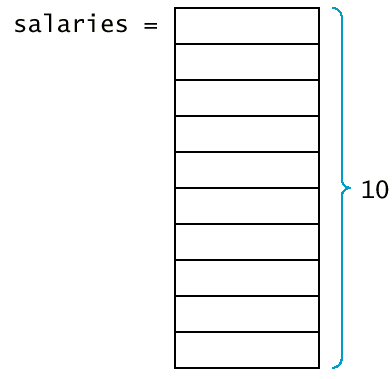
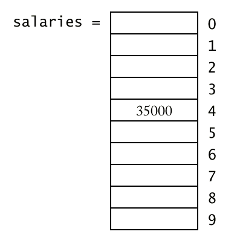

Chapter 9: Vectors and Arrays
Chapter Goals
- To become familiar with using vectors to collect
objects
- To be able to access vector elements and resize
vectors
- To be able to pass vectors to functions
- To learn about common array algorithms
- To learn how to use one-dimensional and
two-dimensional arrays
Using Vectors to Collect Data Items
- Suppose you write a program that read in a list
of salary figures and prints out the list, marking the highest value,
like
this:
32000
54000
67500
29000
35000
80000
highest value => 115000
44500
100000
65000
- All the values need to be read to find the
highest one.
- If you know there are ten inputs, you could use
10 variables salary1, salary2, ... , salary10.
But you would have to write a lot of code ten times to handle each
variable.
- This technique becomes prohibitive as the list
gets larger (100 salaries).
- A vector is a collection of data items of
the same type.
vector<double> salaries(10);
- This vector holds 10 values, each of which are double.

Syntax 9.1 Vector Variable
Definition
|
Syntax 9.1 : Vector Variable
Definition
vector<type_name> variable_name;
vector<type_name> variable_name(initial_size);
| Example: |
vector<int> scores;
vector<Employee> staff(20);
|
| Purpose: |
Define a new variable of vector type,
and optionally supply an initial size. |
|
- You must specify which slot you want to use with
the [] operator.
salaries[4] = 35000;
- The number inside the brackets is called an index.
- Because salaries is a vector of double values, a
slot such as salaries[4] can be used just like any variable
of type double.
cout << salaries[4] << "\n";
- In C++, the slots of vectors are numbered starting
at 0.

Syntax 9.2 Vector Subscripts
|
Syntax 9.2 : Vector Subscripts
vector_expression[integer_expression]
| Example: |
salaries[i + 1]
|
| Purpose: |
Access and element in a vector. |
|
Vector Subscripts
- Trying to access a slot that does not exist in
the vector is an error.
vector<double> salaries(10);
cout << salaries[10]; /* ERROR ! Legal subscripts are 0 until 9 */
- The C++ standard implementation of vector
generates no error message.
- If you make an index error, you silently read or
overwrite another memory location.
- When a vector is defined without a size
parameter, it is empty and can hold no elements.
vector<double> salaries; /* no size given */
salaries[0] = 35000; /* ERROR ! */
- You can find the size vector by calling the size
member function.
for(i = 0; i < v.size(); i++)
do something with v[i];
- Using size is actually better than
using a constant (so called magic number).
- The function push_back allows you to
start out with an empty vector and grow the vector whenever another
element is added.
vector<double> salaries;
. . .
double s;
cin >> s;
. . .
salaries.push_back(s);
- The push_back member function resizes
the
vector by adding one element to its end.
- If you already know how many elements you need in
a vector, you should specify that size when you define it.
- Another member function, pop_back,
removes the last element of a vector, shrinking its size by one.
salaries.pop_back(); /* Now salaries has size 9 */
- The C++ standard (STL) defines many more useful
functions
for vectors, but we will use only push_back and pop_back.
Vector Parameters and Return Values
- Functions and procedures often have vector
parameters.
- This function computes the average of a vector of
floating-point numbers.
double average(vector<double> v)
{ if (v.size() == 0) return 0;
double sum = 0;
for (int i = 0; i < v.size(); i++) sum = sum + v[i];
return sum / v.size();
}
- average.cpp
- A vector can be passed by value or by reference.
- Pass by reference is used for modifying
individual elements of the vector.
- The function raises all values in the vector by
the given percentage.
void raise_by_percent(vector<double>& v, double p)
{ for (int i = 0; i < v.size(); i++)
v[i] = v[i] * (1 + p / 100);
}
- A function can return a vector.
- Here is a function that collects all values that
fall within a certain range.
vector<double> between(vector<double> v, double low, double high)
{ vector<double> result;
for (int i = 0; i < v.size(); i++)
if (low <= v[i] && v[i] <= high) result.push_back(v[i]);
return result;
}
- between.cpp
- Here is a function that collects the positions of
all matching values in a vector of integers.
vector<int> find_all_between(vector<double> v, double low, double high)
{ vector<int> pos;
for (int i = 0; i < v.size(); i++)
if (low <= v[i] && v[i] <= high) pos.push_back(i);
return pos;
}
Vector Parameters and Return Values (matches.cpp)
Removing and Inserting Elements
- How do you remove an element from a vector?
- If the order is not important, overwrite
the element to be removed with the last element of the vector,
then shrink the size of the vector.
void erase(vector<string>& v, int pos)
{ int last_pos = v.size()-1;
v[pos] = v[last_pos];
v.pop_back();
}
- If the order matters, you must move all elements
down by one slot, then shrink the size of the vector.
void erase(vector<string>& v, int pos)
{ for (int i = pos; i < v.size()-1; i++) v[i] = v[i+1];
v.pop_back();
}
Removing and Inserting Elements (erase2.cpp)
- To insert an element in the middle of a
vector, you must add a new element at the end of the vector and move
all elements above the insertion location up by one slot.
void insert(vector<string>& v, int pos, string s)
{ int last = v.size()-1;
v.push_back(v[last]);
for (int i = last; i > pos; i--) v[i] = v[i-1];
v[pos] = s;
}
- Note that when you insert an element you start at
the end of the vector, move that element up, then go to the one before
that.

Removing and Inserting Elements (insert.cpp)
Parallel Vectors
- Suppose you want to process a series of product
data, and the display the product information, making the best value
(with the best price/score ratio).
ACMA P600 Price: 995 Score75
ALaris Nx686 Price 798 Score 57
AMAX Powerstation 600 Price: 999 Score 75
AMS Infogold P600 Price: 795 Score: 69
AST PRemmia Price: 2080 Score: 80
Austin 600 Price: 1499 Score: 95
beast value => Blackship NX-600 Price 598 Score: 60
Kompac 690 Price: 695 Score: 60
- One possibility is to create three vectors
(names, price, scores) of the same length. (See bestval1.cpp)
- These vectors are called parallel vectors
because they must be processed together.
- Each slice - names[i], prices[i],
scores[i] - contains data that needs to be processed
together.

- Parallel vectors become a headache in larger
programs.
- Each vector must be the same length.
- Each slice is filled with values that belong
together.
- Any function that operates on a slice must
get several vectors as parameters.
- To remove parallel vectors, look at the slice and
find the concept it represents. Make the concept into a class.
- Eliminate parallel vectors and replace them with
a single vector of objects.

Arrays
- A second mechanism for collecting elements of the
same type is using arrays.
- Arrays are a lower-level abstraction than
vectors, so they are less convenient.
- Arrays cannot be resized.
- Vectors are a recent addition to C++, so many
older programs use arrays instead.
- Arrays are faster and more efficient than vectors.
- Declaring an array is very similar to declaring a
vector.
double salaries[10]; /* array */
/* compare to.... */
vector<double> salaries(10); /* vector */
- Arrays can never change size.
- The array size must be set when the program
is compiled. (You can't ask the user how many elements and then
allocate a sufficient number because the size must be a constant).
- When defining an array, you must guess on the
maximum number of elements you need to store.
const int SALARIES_CAPACITY = 100;
double salaries[SALARIES_CAPACITY];
- You must keep a constant to hold the capacity
of the array.
- You must keep a companion variable that
counts how many elements are actually used. The following loop
collects data and fills up the salaries
array.
int salaries_size = 0;
while (more && salaries_size < SALARIES_CAPACITY)
{ cout << "Enter salary or 0 to quit: ";
double x;
cin >> x;
if (cin.fail() || x == 0) more = false;
else
{ salaries[salaries_size] = x;
salaries_size++;
}
}
Syntax 9.3: Array Variable Definition
|
Syntax 9.3 : Array Variable
Definition
type_name variable_name[size];
| Example: |
int scores[20];
|
| Purpose: |
Define a new variable of an array type. |
|
Array Parameters
- When writing a function with an array parameter,
you place an empty[] behind the parameter name:
double maximum(double a[], int a_size);
- You need to pass the size of the array into the
function, because the function has no other way of querying the size of
the array (there is no size() member function).
- Unlike all other parameters, array parameters are
always passed by reference.
void raise_by_percent(double s[], double s_size, double p)
{ int i;
for (i = 0; i < s_size; i++) s[i] = s[i]*(1 + p/100);
}
- Never use an & when defining an
array parameter.
- Use the const keyword whenever a
function does not actually modify an array.
double maximum(const double a[], int a_size)
- If a function adds elements to an array, you need
to pass the array, the maximum size, and the current size.
- The current size must be passed as a reference
parameter.
void read_data(double a[], int a_capacity, int& a_size)
{ a_size = 0;
while (a_size < a_capacity)
{ double x;
cin >> x;
if (cin.fail()) return;
a[a_size] = x;
a_size++;
}
}
- Arrays cannot be function return types.
- To "return" an array, the caller of the function
must provide an array parameter to hold the result.
Character Arrays
- There was a time when C++ had no string
class.
- All string processing was carried out by
manipulating arrays of the type char.
- The char type denotes an individual character and
is delimited by single quotes.
char input = 'y'; /* don't confuse with "y" */
- A character array is used to hold a string.
char greeting[] = "Hello";
/* same as
char greeting[6] = "Hello"; */
- The array occupies size characters - one for each
letter and a zero terminator.
|
greeting[0]
|
greeting[1]
|
greeting[2]
|
greeting[3]
|
greeting[4]
|
greeting[5]
|
|
'H'
|
'e'
|
'l'
|
'l'
|
'o'
|
'\0'
|
- You do not need to specify the size of the array
variable for a character array constant.
- Many string functions in the standard library
depend on zero terminators in character arrays.
int strlen(const char s[])
{ int i = 0;
while (s[i] != '\0') i++;
return i;
}
- It's important to not forget the space for the
zero terminator.
- It's helpful to declare character arrays with an
"extra space" for the zero terminator.
const int MYSTRING_MAXLENGTH = 4;
char mystring[MYSTRING_MAXLENGTH + 1];
- Generally it is best to avoid the use of
character arrays - the string class is safer and far more convenient.
- Occasionally you need to convert a string
into a character array to call a function that was written before the string
class was invented.
- Example: to convert a character array containing
digits into its integer value.
int atoi(const char s[])
- Use the c_str member function to
convert a string into a character array.
string year = "1999";
int y = atoi(year.c_str());
Two-Dimensional Arrays
- It often happens that we want to store
collections of numbers that have a two-dimensional layout.
- Such an arrangement, consisting of row and
columns of values, is called a two-dimensional array,
or a matrix.
- C++ uses an array with two subscripts to store a
two-dimensional array:
const int BALANCE_ROWS = 11;
const int BALANCE_COLS = 6;
double balances[BALANCE_ROWS][BALANCE_COLS];
- To select a particular element in the
two-dimensional array, we need to specify two subscripts in separate
brackets to select the row and column.

Syntax 9.4: Two-Dimensional Array
Definition
|
Syntax 9.4 : Two-Dimensional
Array Definition
type_name variable_name[size1][size2];
| Example: |
double monthly_sales[NREGIONS][12];
|
| Purpose: |
Define a new variable that is a
two-dimensional array. |
|
When passing a two-dimensional array to a function,
you must specify the number of columns as a constant with the
parameter type.
The number of rows can be variable.
void print_table(const double table[][BALANCE_COLS], int table_rows)
{ const int WIDTH = 10;
cout << fixed << setprecision(2);
for (int i = 0; i < table_rows; i++)
{ for (int j = 0; j < BALANCES_COLS; j++)
cout << setw(WIDTH) << table[i][j];
cout << "\n";
}
}
Two-Dimensional Arrays (matrix.cpp)